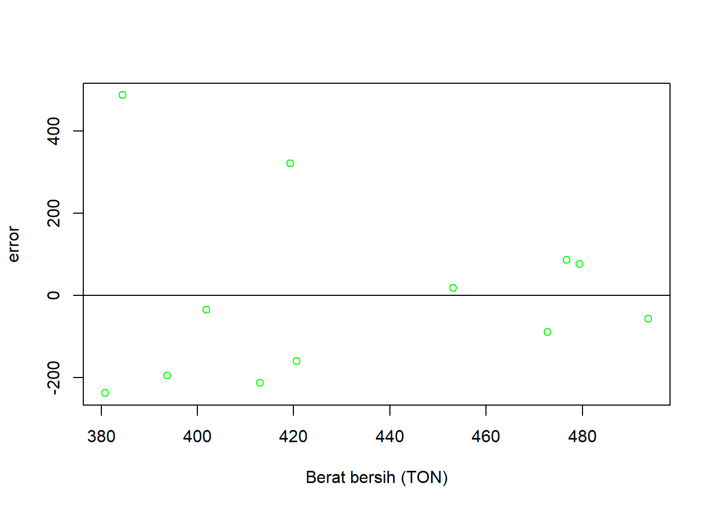
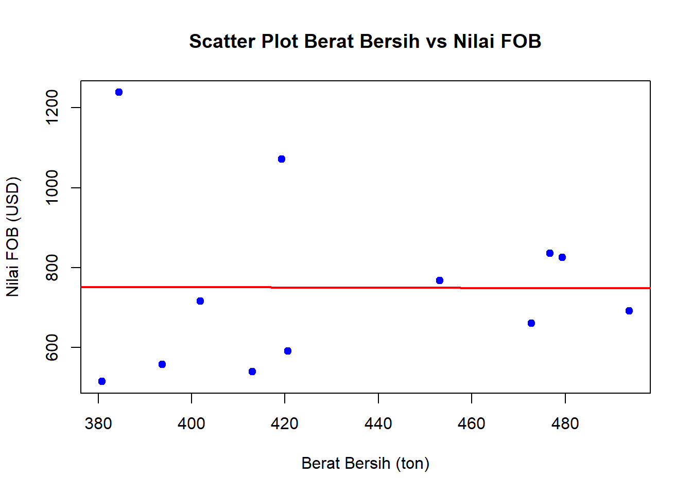

library('readxl')
library('tidyverse')Analisis Tantangan dan Peluang Indonesia terhadap Ekspor Karet ke Jepang sebagai Pasar Utama
Metode Penelitian Politeknik APP Jakarta

1 Pendahuluan
1.1 Latar belakang
Karet merupakan salah satu komoditi unggulan Indonesia karet indonesia menjadi produsen karet alam terbesar kedua di dunia, yang menjadikan sektor ini sebagai salah satu pilar utama dalam ekspor nonmigas. Jepang adalah salah satu pasar utama ekspor karet Indonesia, terutama untuk memenuhi kebutuhan industri otomotif, elektronik, dan manufaktur lainnya. Namun, ekspor karet ke Jepang menghadapi tantangan seperti fluktuasi nilai tukar, penurunan harga karet global, dan persaingan dengan negara lain seperti Thailand dan Vietnam. Di sisi lain, kebutuhan Jepang akan karet alam tetap stabil, menciptakan peluang untuk mempertahankan dan meningkatkan pangsa pasar.
1.2 Ruang lingkup
Penelitian ini berfokus pada analisis tantangan dan peluang dalam ekspor karet Indonesia ke Jepang sebagai pasar utama, menggunakan data yang disediakan oleh Badan Pusat Statistik (BPS). Penilitian ini hanya mencakup karet Alam Indonesia, khususnya jenis karet remah (crumb rubber), yang merupakan salah satu produk ekspor unggulan ke jepang.Analisis ini juga dilakukan berdasarkan data ekspor dari tahun 2012-2023. Penelitian ini juga menganalisis faktor faktor yang mempengaruhi ekspor karet indonesia, seperti, Volume dan nilai ekspor karet indonesia , GDP Indonesia dan Jepang sebagai indikator kapasitas ekonomi dan nilai tukar Rupiah terhadap yen sebagai pengukur daya saing.
1.3 Rumusan masalah
-APA SAJA TANTANGAN UTAMA INDONESIA SEBAGAI PRODUSEN KARET DALAM MENGEKSPOR KARET KE JEPANG?
-APA PELUANG YANG DIMANFAATKAN UNTUK MENINGKATKAN EKSPOR KARET INDONESIA KHUSUSNYA KE JEPANG?
-BAGAIMANA FLUKTUASI HARGA KARET INTERNASIONAL MEMPENGARUHI DAYA SAING EKSPOR KARET INDONESIA DI PASAR JEPANG?
1.4 Tujuan dan manfaat penelitian
Tujuan dari penelitian ini diharapkan dapat, Memberikan wawasan yang lebih dalam mengenai tantangan yang harus dihadapi oleh Indonesia dalam mengoptimalkan ekspor karet ke Jepang. Menyediakan informasi tentang peluang yang dapat dimanfaatkan oleh pemerintah dan pelaku industri untuk meningkatkan kinerja ekspor karet Indonesia. Memberikan pemahaman tentang pengaruh fluktuasi harga karet internasional terhadap daya saing ekspor Indonesia, yang berguna dalam pengambilan keputusan ekonomi dan kebijakan perdagangan yang lebih efektif.
1.5 Package
Ini tidak wajib ada di tulisan anda tapi anda dapat menunjukkan Packages yang digunakan antara lain sebagai berikut:
2 Studi pustaka
Perdagangan internasional adalah bagian yang penting dari kehidupan suatu negara. Ini terjadi karena perbedaan dalam sumber daya manusia, sumber daya alam, iklim, dan lokasi geografis, serta keadaan ekonomi dan sosial. Perbedaan ini menyebabkan barang yang dihasilkan, biaya yang diperlukan, dan kuantitas dan kualitas yang berbeda beda di setiap negara.Perdagangan Internasional dibagi menjadi dua kategori yaitu perdagangan barang dan perdagangan jasa. Kegiatan perdagangan Internasional dilakukan bertujuan untuk meningkatkan standar hidup negara tersebut (Schumacher, 2013).
Karet Karet merupakan salah satu komoditas hasil perkebunan yang mempunyai peran cukup penting dalam kegiatan perekonomian di Indonesia. Karet juga salah satu komoditas ekspor Indonesia yang dikenal sebagai penghasil devisa negara selain minyak dan gas. Indonesia merupakan negara produsen dan eksportir karet terbesar dunia.Dilihat dari Tanaman karet di Indonesia sendiri sebagian besar dikuasai oleh Perkebunan Rakyat yaitu sekitar 84,85%, sisanya 6,67% dikuasai Perkebunan Negara, dan 8,48% dikuasai Perkebunan Swasta. Pada tahun 2022 menurut angka estimasi Ditjenbun luas areal karet nasional meningkat 1,30% dari tahun 2021 (Angka Sementara), atau meningkat dari 3,78 juta hektar menjadi 3,83 juta hektar, sementara angka produksi karet meningkat 0,44% dari 3,12 juta ton tahun 2021, menjadi 3,13 juta ton tahun 2022.Sekitar 84,85% dari tanaman karet Indonesia dimiliki oleh Perkebunan Rakyat, dengan 6,67% dimiliki oleh Negara, dan 8,48% dimiliki oleh Perkebunan Swasta. Menurut estimasi Ditjenbun, luas areal karet nasional pada tahun 2022 meningkat 1,30% dari tahun 2021 (angka sedang), atau 3,78 juta hektar menjadi 3,83 juta hektar. Sementara itu, produksi karet meningkat 0,44% dari 3,12 juta ton pada tahun 2021 menjadi 3,13 juta ton pada tahun 2022.
Ekspor Ekspor merupakan bagian dari perdangan internasional,Ekspor sendiri adalah kegiatan menjual barang/jasa dari daerah pabean sesuai peraturandan undang-undang yang berlaku. Daerah pabean yang dimaksud ialahseluruh wilayah nasional dari suatu negara , diamana dipungut bea masuk dan bea keluar untuk semua barang-barang yang melewati wilayah tersebut.
3 Metode penelitian
3.1 Data
Berikut adalah data yang digunakan sebagai objek penelitian yaitu Berat Bersih X dan Y nilai FOB.
| TAHUN | X | Y |
|---|---|---|
| 2012 | 384.5 | 1238.80 |
| 2013 | 419.3 | 1072.20 |
| 2014 | 401.9 | 715.90 |
| 2015 | 420.6 | 590.30 |
| 2016 | 413.0 | 538.20 |
| 2017 | 453.1 | 766.80 |
| 2018 | 472.8 | 659.40 |
| 2019 | 493.7 | 690.70 |
| 2020 | 380.8 | 514.00 |
| 2021 | 479.4 | 824.90 |
| 2022 | 476.7 | 834.90 |
| 2023 | 393.7 | 556.80 |
library(readxl)
DATAEKSPOR <- read_excel("C:/Users/Asus/Desktop/Bahan Anwar/metopel (1)/metopel/dataexel.xlsx")
model <- lm(Y ~ X, data = DATAEKSPOR)
summary(model)
Call:
lm(formula = Y ~ X, data = DATAEKSPOR)
Residuals:
Min 1Q Median 3Q Max
-237.99 -168.95 -46.42 78.73 486.93
Coefficients:
Estimate Std. Error t value Pr(>|t|)
(Intercept) 764.91494 745.23927 1.026 0.329
X -0.03393 1.71637 -0.020 0.985
Residual standard error: 230.7 on 10 degrees of freedom
Multiple R-squared: 3.908e-05, Adjusted R-squared: -0.09996
F-statistic: 0.0003908 on 1 and 10 DF, p-value: 0.9846setwd("C:/Users/Asus/Desktop/Bahan Anwar/metopel (1)/metopel")
metopen=read_excel("dataexel.xlsx")
library(readxl)
reg1<-lm(data =metopen,Y~X)
summary(reg1)
Call:
lm(formula = Y ~ X, data = metopen)
Residuals:
Min 1Q Median 3Q Max
-237.99 -168.95 -46.42 78.73 486.93
Coefficients:
Estimate Std. Error t value Pr(>|t|)
(Intercept) 764.91494 745.23927 1.026 0.329
X -0.03393 1.71637 -0.020 0.985
Residual standard error: 230.7 on 10 degrees of freedom
Multiple R-squared: 3.908e-05, Adjusted R-squared: -0.09996
F-statistic: 0.0003908 on 1 and 10 DF, p-value: 0.9846library(readxl)
metopen$m <-resid(reg1)
plot(metopen$X,metopen$m, xlab="Berat bersih (TON)", ylab ="error",col='green')
abline(h=0)
head(DATAEKSPOR)# A tibble: 6 × 3
TAHUN X Y
<dbl> <dbl> <dbl>
1 2012 384. 1239.
2 2013 419. 1072.
3 2014 402. 716.
4 2015 421. 590.
5 2016 413 538.
6 2017 453. 767.summary(DATAEKSPOR) TAHUN X Y
Min. :2012 Min. :380.8 Min. : 514.0
1st Qu.:2015 1st Qu.:399.9 1st Qu.: 581.9
Median :2018 Median :419.9 Median : 703.3
Mean :2018 Mean :432.5 Mean : 750.2
3rd Qu.:2020 3rd Qu.:473.8 3rd Qu.: 827.4
Max. :2023 Max. :493.7 Max. :1238.8 plot(DATAEKSPOR$X, DATAEKSPOR$Y, main = "Scatter Plot Berat Bersih vs Nilai FOB",
xlab = "Berat Bersih (ton)", ylab = "Nilai FOB (USD)", pch = 19, col = "blue")
abline(model, col = "red", lwd = 2)
3.2 Metode analisis
Metode analisis yang saya gunakan dalam penelitian ini adalah Regresi Linear Sederhana,Metode ini bertujuan untuk menjelaskan hubungan antara satu variabel independen X (berat bersih/Net Weight) dan satu variabel dependen Y (nilai FOB).
Model yang akan digunakan:
𝑌=𝛽0+𝛽1𝑋+𝜖 \(Y\): Nilai FOB (USD).
\(X\): Berat Bersih (ton).
\(\beta_0\): Intersep.
\(\beta_1\): Koefisien regresi (pengaruh berat bersih terhadap nilai FOB).
\(\epsilon\): Error term.
Dengan Metode ini penelitian dengan Regresi digunakan untuk memperkirakan nilai variabel dependen (𝑌) berdasarkan nilai variabel independen (𝑋).
4 Pembahasan
4.1 Pembahasan masalah
| Aspek | Koefisien / Nilai | Std. Error | t-value | p-value |
|---|---|---|---|---|
| Residuals | -642883, 5111, … | - | - | - |
| Intercept | 11,657,572.4 | 1,295,923.6 | 8.996 | 0.000845 |
| X (Jumlah Ekspor Karet ke Jepang) | -419.7 | 245.9 | -1.707 | 0.163050 |
| S (PDB Indonesia) | 401.4 | 308.0 | 1.303 | 0.262394 |
| Residual Standard Error | 725,600 | - | - | - |
| Multiple R-squared | 0.4458 | - | - | - |
| Adjusted R-squared | 0.1687 | - | - | - |
| F-statistic | 1.609 | - | - | - |
Koefisien untuk X (jumlah ekspor karet ke Jepang) adalah -419.7, yang berarti bahwa setiap kenaikan satu ton ekspor karet dapat menyebabkan penurunan PDB Indonesia sebesar 419.7. Namun, p-value untuk koefisien ini adalah 0.163050, yang lebih besar dari 0.05, menunjukkan bahwa jumlah ekspor karet tidak signifikan dalam mempengaruhi PDB Indonesia. Ini berarti meskipun ada hubungan negatif antara ekspor karet dan PDB, hubungan ini tidak cukup kuat atau signifikan dalam model ini.
Koefisien untuk S (PDB Indonesia) adalah 401.4, yang menunjukkan bahwa setiap kenaikan satu unit nilai FOB karet dapat meningkatkan PDB Indonesia sebesar 401.4. Meskipun ada hubungan positif yang terindikasi antara nilai FOB dan PDB, p-value untuk koefisien ini adalah 0.262394, lebih besar dari 0.05, yang menandakan bahwa nilai FOB tidak signifikan dalam mempengaruhi PDB Indonesia. Jadi, meskipun ada indikasi hubungan positif, ini tidak cukup signifikan dalam model ini.
4.2 Analisis masalah
Hasil regresinya adalah
model <- lm(Y ~ X, data = DATAEKSPOR)
summary(model)
Call:
lm(formula = Y ~ X, data = DATAEKSPOR)
Residuals:
Min 1Q Median 3Q Max
-237.99 -168.95 -46.42 78.73 486.93
Coefficients:
Estimate Std. Error t value Pr(>|t|)
(Intercept) 764.91494 745.23927 1.026 0.329
X -0.03393 1.71637 -0.020 0.985
Residual standard error: 230.7 on 10 degrees of freedom
Multiple R-squared: 3.908e-05, Adjusted R-squared: -0.09996
F-statistic: 0.0003908 on 1 and 10 DF, p-value: 0.9846Koefisien untuk Intersep (\(\beta_0\)): 764.91. Artinya, jika berat bersih adalah 0, nilai FOB diperkirakan \(764.91\) USD. Koefisien berat bersih (X) (\(\beta_1\)): -0.03393. Ini menunjukkan bahwa setiap kenaikan 1 ton berat bersih, nilai FOB cenderung menurun sebesar \(0.03393\) USD. Namun, koefisien ini tidak signifikan (p-value = 0.985). Untuk X: 0.985 (jauh lebih besar darI (0.05). Artinya, koefisien 𝑋tidak signifikan secara statistik. Berat bersih tidak memiliki pengaruh yang signifikan terhadap nilai FOB dalam model ini. Untuk model keseluruhan (F-statistik): 0.9846 (juga jauh lebih besar dari 0.05). Artinya, model secara keseluruhan tidak signifikan dalam menjelaskan hubungan antara berat bersih dan nilai FOB.
5 Kesimpulan
Penelitian ini memberikan wawasan mengenai tantangan dan peluang dalam ekspor karet Indonesia ke Jepang. Meskipun hasil regresi menunjukkan bahwa variabel ekspor karet dan nilai FOB tidak memiliki pengaruh signifikan terhadap PDB Indonesia, tantangan seperti fluktuasi harga karet global dan persaingan dengan negara lain tetap perlu diperhatikan. Di sisi lain, kebutuhan Jepang akan karet alam yang stabil memberikan peluang bagi Indonesia untuk meningkatkan pangsa pasar. Oleh karena itu, meskipun hubungan antara variabel yang dianalisis tidak signifikan, pengelolaan yang tepat terhadap faktor-faktor eksternal dapat meningkatkan kinerja ekspor karet Indonesia.
6 Referensi
Wijoyo, A., Annie .S , N., & Hazmi , A. (2025). PERDAGANGAN INTERNASIONAL. Neraca: Jurnal Ekonomi, Manajemen Dan Akuntansi, 3(4), 405–411 . Retrieved from https://jurnal.researchideas.org/index.php/neraca/article/view/127
Badan Pusat Statistik Provinsi Dki Jakarta. (1 Desember 2022). Karet Komoditas Unggulan Indonesia. Diakses pada 13 Januari 2025, dari https://jakarta.bps.go.id/id/news/2022/12/01/823/karet-komoditas-unggulan-indonesia.html
https://satudata.pertanian.go.id/assets/docs/publikasi/Outlook_Karet_2022_ttd.pdf
Kementerian Perdagangan Republik Indonesia. (2023). Laporan Perdagangan Karet Indonesia ke Pasar Dunia. Diakses dari: https://www.kemendag.go.id
World Bank. (2024). Indonesia’s Export Competitiveness in Rubber. Retrieved from: https://www.worldbank.org
Kementerian Perindustrian Republik Indonesia. (2022). Pengaruh Fluktuasi Harga Karet Global terhadap Industri dalam Negeri. Available at: https://www.kemenperin.go.id
ASEAN Economic Community. (2022). The Role of ASEAN in Rubber Trade in Asia. Diakses pada 12 Januari 2025, dari: https://asean.org